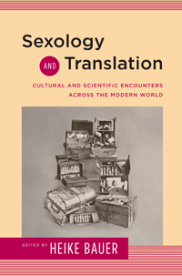

Is the emergence of modern sexuality a global phenomenon?
Is the emergence of modern sexuality a global phenomenon?


 Is the emergence of modern sexuality a global phenomenon?
Is the emergence of modern sexuality a global phenomenon?

|  |
Sexology and TranslationCultural and Scientific Encounters across the Modern Worldedited by Heike Bauerpaper EAN: 978-1-43991-249-2 (ISBN: 1-4399-1249-1) |
"A valuable and nuanced analysis of sexology and modernity as intertwined transactional processes of dissemination, adaptation, and recirculation: conversations rather than the laying down of authoritative truths. Through the examination of a wide array of texts, including hitherto neglected popular genres, within which these ideas were being discussed, and extending the geographical range well beyond Western Europe and North America to Latin America, the Middle East, and Asia, the rise of modern sexuality is demonstrated to have been a global phenomenon, with effects nonetheless specifically situated within particular cultural contexts."
—Dr. Lesley A. Hall, Wellcome Library
Sexology and Translation is the first study of the contemporaneous emergence of sexology in Europe, Asia, and the Middle East. Heike Bauer and her contributors�historians, literary and cultural critics, and translation scholars�address the intersections between sexuality and modernity in a range of contexts during the period from the 1880s to the 1930s.
From feminist sexualities in modern Japan to Magnus Hirschfeld�s affective sexology, this book offers compelling new insights into how sexual ideas were formed in different contexts via a complex process of cultural negotiation. By focusing on issues of translation�the dynamic process by which ideas are produced and transmitted�the essays in Sexology and Translation provide an important corrective to the pervasive idea that sexuality is a �Western� construct that was transmitted around the world.
This volume deepens understanding of how the intersections between national and transnational contexts, between science and culture, and between discourse and experience, shaped modern sexuality.
Contributors include: Brian James Baer, Howard Chiang, Peter Cryle, Kate Fisher, Jennifer Fraser, Jana Funke, Liat Kozma, Birgit Lang, Leon Rocha, Katie Sutton, Michiko Suzuki, James Wilper, and the editor.
Excerpt available at www.temple.edu/tempress
"Here�finally�is a collection of essays wholly engaged with the transnational nature of knowledge exchange in early sexology. Exploiting the archival richness of materials newly available in the digital age, Sexology and Translation argues convincingly for a global perspective on the making of sexual knowledge as �modern.� Impressive as much in its geopolitical range as in its astute historical and cultural analysis, this fascinating collection signals the start of an exciting new phase in the critical assessment of the sexological project."
—Laura Doan, author of Disturbing Practices: History, Sexuality, and Women�s Experience of Modern War
"A necessary and welcome addition to the existing scholarship. Moving beyond the conventional geographical emphasis on the Anglo-Euro-American world, the volume is spatially inclusive and theoretically astute in its examination of the emergence of sexological ideas and discourses across the modern world. Readers will delight in finding rich and complex narratives on topics ranging from the intellectual history of frigidity, sexological ideas in China and Russia, Arabic and Hebrew discourses on sex and sexuality, representations of sexuality within Peruvian literature, Japanese encounters with western writings on sex, plus a robust re-reading of western sexology and sexologists."
—Sanjam Ahluwalia, Department of History and Women�s and Gender Studies Program, Northern Arizona University
"This welcome volume explores the intersections between sexology, translation, and modernity, and the provocative notion of 'translation as invention' lies at the volume's heart.... This volume will become an essential text, and its essays will enliven courses and scholarship on nations, sexuality, gender, modernity, and citizenship, among others. Highly recommended."
—Journal of the History of Sexuality
"The history of sexology, as Sexology and Translation editor Heike Bauer argues in her astute and timely introduction to the volume, is no longer a new area of scholarly inquiry.... Bauer successfully updates germinal texts such as Lucy Bland and Laura L. Doan's edited 1998 volume Sexology in Culture.... Sexology and Translation revolutionizes the study of modernism by showing the influential role sexology played in mobilizing normalcy and deviance, and thus qualifying some humans for life and others for death, as constitutive elements in the production and global circulation of the modern."
—Modernism/modernity
"This book gathers twelve chapters that addressed both the translation between languages/ cultures and between fields.... Drawing on contemporary translation studies, many of the chapters explain how sexological works were turned into texts in other languages, attending to the differences in cultural context, and exploring the political issues that framed these translation efforts. An exemplary such chapter was Brian James Baer on Russia, but other fascinating essays addressed the translation of European sexological discourses into Hebrew, Arabic, Chinese, and Japanese.... [T]his book adds importantly to our understanding of the spread of sexology outside of the much more commonly studied European texts."
—History of the Human Sciences
"While the collection is still weighted toward the Anglo-European, and in no way globally comprehensive, the essays are nonetheless a rich contribution to our understanding of the global history of sexuality, both in terms of their individual topics and through demonstrating theoretical models for utilizing the tools of translation and sites of cultural exchange to better understand our modern preoccupation with human sexuality."
—MedHum
Heike Bauer is Senior Lecturer in English and Gender Studies at Birkbeck College, University of London. She is the author of English Literary Sexology: Translations of Inversion, 1880�1930, and editor of Women and Cross-Dressing and (with Matt Cook) Queer 1950s: Rethinking Sexuality in the Postwar Years.
Sexuality Studies/Sexual Identity
History
Literature and Drama
Sexuality Studies, edited by Janice Irvine and Regina Kunzel.
Sexuality Studies, edited by Janice Irvine and Regina Kunzel, features work in sexuality studies broadly construed, in its social, cultural, and political dimensions, and in both historical and contemporary formations. The series includes titles located within disciplinary and interdisciplinary frames that combine theoretical methodologies with empirical research.
© 2015 Temple University. All Rights Reserved. This page: http://www.temple.edu/tempress/titles/2363_reg.html.